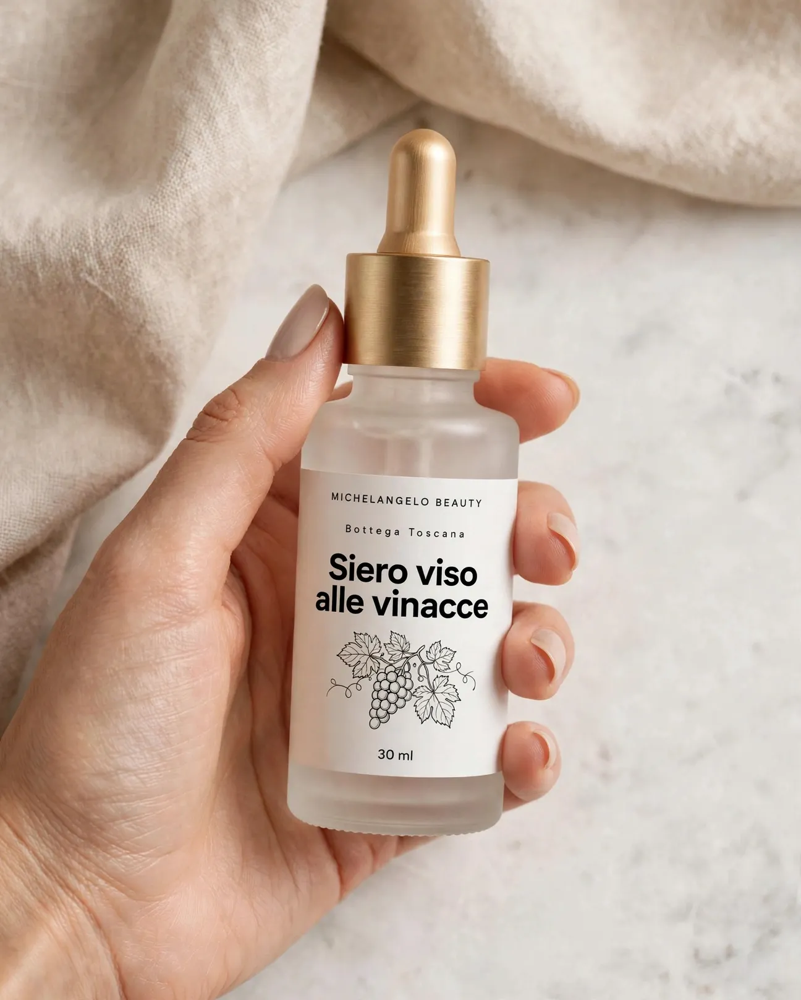
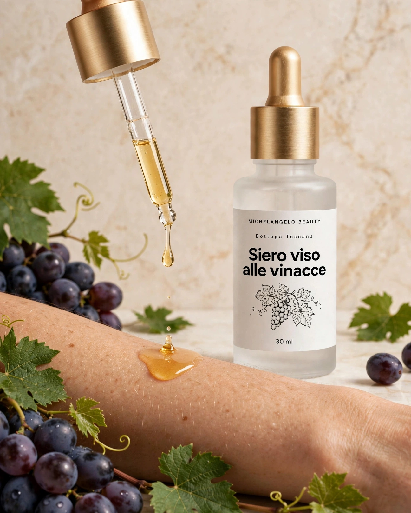

Opera n. IViso



Viso Opera n. II
Siero viso alle vinacce
Un siero di soli oli: vinaccioli spremuti a freddo dopo la vendemmia, squalano d'oliva e jojoba. Nutre e lascia la pelle morbida.
32,00 € 30 ml · IVA inclusa · 1.066,67 €/l
1
- Spedizione 4,90 € · gratuita da 49 €
- Arriva in 2-4 giorni lavorativi con la spedizione standard
- Confezione regalo con biglietto scritto a mano (+3 €): la scegli nel carrello
- Reso entro 14 giorni dalla consegna · come funziona
Scheda dell'opera
- Opera
- n. II · linea Viso
- Materiali
- Olio di vinaccioli toscani, squalano d'oliva, jojoba
- Tecnica
- Miscela a freddo di soli oli, senza acqua
- Formato
- 30 ml · PAO 6M
- Lotto
- MB-26-121 (lotto in vendita ora)
- Origine
- 100% di ingredienti di origine naturale (ISO 16128)
Descrizione
Dopo la vendemmia, dai semi dell'uva di una cantina vicina si spreme a freddo un olio leggero e chiaro. Lo uniamo a squalano ricavato dalle olive e a olio di jojoba. Una formula anidra, cioè senza acqua, da usare la sera: lascia la pelle morbida ed elastica al tatto. Non è profumato.
Come si usa
La sera, scalda 3-4 gocce tra i palmi e premile su viso e collo puliti, ancora appena umidi. Puoi usarlo da solo o prima della crema.
Ingredienti tocca una parola
Elenco in ordine decrescente di quantità. 100% di ingredienti di origine naturale, calcolato secondo la norma ISO 16128.
Conservazione e PAO
Flacone in vetro ambrato con contagocce. Tienilo chiuso, lontano da finestre e termosifoni.
PAO 6M: usalo entro sei mesi dalla prima apertura.
Persona responsabile
Michelangelo Beauty Bottega s.n.c., Via della Bottega 0, 55000 Colline Apuane (LU), P.IVA 00000000000, bottega@michelangelobeauty.example, tel. 000 000 0000 (dati di fantasia).
Domande
Unge?
Con poche gocce su pelle umida si assorbe in qualche minuto. Per questo lo consigliamo la sera.
Si può usare con la crema?
Sì: prima il siero, poi la crema.
Si abbina con

Opera n. VIIISaponi

Opera n. VMani e labbra